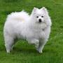
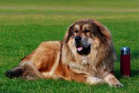

The Cane Corso is an Italian breed of mastiff. it is usually kept as a companion dog or guard dog; it may also be used to protect livestock.
Breeds

Cane Corso
Bulldog
The Bulldog is a thick-set, low-slung, well-muscled bruiser 'sourmug' face is the universal symbol of courage and tenacity.
Chow-chow
The Chow Chow is a spitz-type of dog breed originally from Northern China. The Chow Chow is a sturdily built dog, square in profile, with a broad skull and small, triangular, erect ears with rounded tips.

American-Eskimo
The American-Eskimo dog is a breed of companion dog, originating in Germany. The breed's progenitors were German Spitz, but due to anti-German sentiment during the First World War, it was renamed "American Eskimo Dog."
Dobermann
The Dobermann is intelligent, alert and tenaciously loyal; it is kept as a guard dog or as a companion animal.

German-Shepherd
The German Shepherd also known in Britain as an Alsatian, is a German breed of working dog of medium to large size. It is commonly kept as a companion dog.
Rottweiler
Rottweiler is a breed of domestic dog, regarded as medium-to-large or large. The dogs were known in German as Rottweiler Metzgerhund, meaning Rottweil butchers' dogs. Rottweilers are now also used as search and rescue dogs, guard dogs, and police dogs.
Samoyed
Samoyed is a breed of medium-sized herding dogs with thick, white, double-layer coats. They are domesticated animals that assist in herding, hunting, protection and sled-pulling.
Shiba-Inu
The Shiba Inu is a breed of hunting dog from Japan. small-to-medium breed, it is the smallest of the six original dog breeds native to Japan
Siberian-Husky
The Siberian Husky is a breed of medium-sized working sled dog. The breed belongs to the Spitz genetic family.
Breed of the day
Best Breed of Dog for today
Caucasian Shepherds
Caucasian Shepherds are large, powerful and independent guardian dogs with strong protective instincts, best suited for experienced owners in rural or spacious suburban settings. Alert, loyal and deeply devoted to their family, they appreciate regular companionship and are naturally wary of strangers, becoming highly vocal around perceived threats.
Make Your Choice!!!
Our Shop Locations
Lagos - Ikeja
Edo - Benin
Plateau - Jos